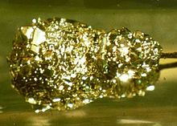
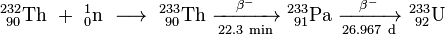

Protactinium
|  | |||||||||||||||||||||||||||||||||||||||||||||||||||||||||||||||||||||||||||||||||||||||||||||||||||||||||||||||||||||||||||||||||||||||||||||||||||||||||||||||||||||||||||||||||||||||||||||||||||||||||||||||||||||||||||||||||||||
| General properties | |||||||||||||||||||||||||||||||||||||||||||||||||||||||||||||||||||||||||||||||||||||||||||||||||||||||||||||||||||||||||||||||||||||||||||||||||||||||||||||||||||||||||||||||||||||||||||||||||||||||||||||||||||||||||||||||||||||
|---|---|---|---|---|---|---|---|---|---|---|---|---|---|---|---|---|---|---|---|---|---|---|---|---|---|---|---|---|---|---|---|---|---|---|---|---|---|---|---|---|---|---|---|---|---|---|---|---|---|---|---|---|---|---|---|---|---|---|---|---|---|---|---|---|---|---|---|---|---|---|---|---|---|---|---|---|---|---|---|---|---|---|---|---|---|---|---|---|---|---|---|---|---|---|---|---|---|---|---|---|---|---|---|---|---|---|---|---|---|---|---|---|---|---|---|---|---|---|---|---|---|---|---|---|---|---|---|---|---|---|---|---|---|---|---|---|---|---|---|---|---|---|---|---|---|---|---|---|---|---|---|---|---|---|---|---|---|---|---|---|---|---|---|---|---|---|---|---|---|---|---|---|---|---|---|---|---|---|---|---|---|---|---|---|---|---|---|---|---|---|---|---|---|---|---|---|---|---|---|---|---|---|---|---|---|---|---|---|---|---|---|---|---|---|---|---|---|---|---|---|---|---|---|---|---|---|---|---|---|
| Name, symbol | protactinium, Pa | ||||||||||||||||||||||||||||||||||||||||||||||||||||||||||||||||||||||||||||||||||||||||||||||||||||||||||||||||||||||||||||||||||||||||||||||||||||||||||||||||||||||||||||||||||||||||||||||||||||||||||||||||||||||||||||||||||||
| Pronunciation | /ˌproʊtækˈtɪniəm/ PROH-tak-TIN-ee-əm |
||||||||||||||||||||||||||||||||||||||||||||||||||||||||||||||||||||||||||||||||||||||||||||||||||||||||||||||||||||||||||||||||||||||||||||||||||||||||||||||||||||||||||||||||||||||||||||||||||||||||||||||||||||||||||||||||||||
| Appearance | bright, silvery metallic luster | ||||||||||||||||||||||||||||||||||||||||||||||||||||||||||||||||||||||||||||||||||||||||||||||||||||||||||||||||||||||||||||||||||||||||||||||||||||||||||||||||||||||||||||||||||||||||||||||||||||||||||||||||||||||||||||||||||||
| Protactinium in the periodic table | |||||||||||||||||||||||||||||||||||||||||||||||||||||||||||||||||||||||||||||||||||||||||||||||||||||||||||||||||||||||||||||||||||||||||||||||||||||||||||||||||||||||||||||||||||||||||||||||||||||||||||||||||||||||||||||||||||||
|
|||||||||||||||||||||||||||||||||||||||||||||||||||||||||||||||||||||||||||||||||||||||||||||||||||||||||||||||||||||||||||||||||||||||||||||||||||||||||||||||||||||||||||||||||||||||||||||||||||||||||||||||||||||||||||||||||||||
| Atomic number | 91 | ||||||||||||||||||||||||||||||||||||||||||||||||||||||||||||||||||||||||||||||||||||||||||||||||||||||||||||||||||||||||||||||||||||||||||||||||||||||||||||||||||||||||||||||||||||||||||||||||||||||||||||||||||||||||||||||||||||
| Standard atomic weight (±) | 231.03588(2)[1] | ||||||||||||||||||||||||||||||||||||||||||||||||||||||||||||||||||||||||||||||||||||||||||||||||||||||||||||||||||||||||||||||||||||||||||||||||||||||||||||||||||||||||||||||||||||||||||||||||||||||||||||||||||||||||||||||||||||
| Element category | actinide | ||||||||||||||||||||||||||||||||||||||||||||||||||||||||||||||||||||||||||||||||||||||||||||||||||||||||||||||||||||||||||||||||||||||||||||||||||||||||||||||||||||||||||||||||||||||||||||||||||||||||||||||||||||||||||||||||||||
| Group, block | group n/a, f-block | ||||||||||||||||||||||||||||||||||||||||||||||||||||||||||||||||||||||||||||||||||||||||||||||||||||||||||||||||||||||||||||||||||||||||||||||||||||||||||||||||||||||||||||||||||||||||||||||||||||||||||||||||||||||||||||||||||||
| Period | period 7 | ||||||||||||||||||||||||||||||||||||||||||||||||||||||||||||||||||||||||||||||||||||||||||||||||||||||||||||||||||||||||||||||||||||||||||||||||||||||||||||||||||||||||||||||||||||||||||||||||||||||||||||||||||||||||||||||||||||
| Electron configuration | [Rn] 5f2 6d1 7s2 | ||||||||||||||||||||||||||||||||||||||||||||||||||||||||||||||||||||||||||||||||||||||||||||||||||||||||||||||||||||||||||||||||||||||||||||||||||||||||||||||||||||||||||||||||||||||||||||||||||||||||||||||||||||||||||||||||||||
| per shell | 2, 8, 18, 32, 20, 9, 2 | ||||||||||||||||||||||||||||||||||||||||||||||||||||||||||||||||||||||||||||||||||||||||||||||||||||||||||||||||||||||||||||||||||||||||||||||||||||||||||||||||||||||||||||||||||||||||||||||||||||||||||||||||||||||||||||||||||||
| Physical properties | |||||||||||||||||||||||||||||||||||||||||||||||||||||||||||||||||||||||||||||||||||||||||||||||||||||||||||||||||||||||||||||||||||||||||||||||||||||||||||||||||||||||||||||||||||||||||||||||||||||||||||||||||||||||||||||||||||||
| Phase | solid | ||||||||||||||||||||||||||||||||||||||||||||||||||||||||||||||||||||||||||||||||||||||||||||||||||||||||||||||||||||||||||||||||||||||||||||||||||||||||||||||||||||||||||||||||||||||||||||||||||||||||||||||||||||||||||||||||||||
| Melting point | 1841 K (1568 °C, 2854 °F) | ||||||||||||||||||||||||||||||||||||||||||||||||||||||||||||||||||||||||||||||||||||||||||||||||||||||||||||||||||||||||||||||||||||||||||||||||||||||||||||||||||||||||||||||||||||||||||||||||||||||||||||||||||||||||||||||||||||
| Boiling point | 4300 K (4027 °C, 7280 °F) (?) | ||||||||||||||||||||||||||||||||||||||||||||||||||||||||||||||||||||||||||||||||||||||||||||||||||||||||||||||||||||||||||||||||||||||||||||||||||||||||||||||||||||||||||||||||||||||||||||||||||||||||||||||||||||||||||||||||||||
| Density near r.t. | 15.37 g·cm−3 | ||||||||||||||||||||||||||||||||||||||||||||||||||||||||||||||||||||||||||||||||||||||||||||||||||||||||||||||||||||||||||||||||||||||||||||||||||||||||||||||||||||||||||||||||||||||||||||||||||||||||||||||||||||||||||||||||||||
| Heat of fusion | 12.34 kJ·mol−1 | ||||||||||||||||||||||||||||||||||||||||||||||||||||||||||||||||||||||||||||||||||||||||||||||||||||||||||||||||||||||||||||||||||||||||||||||||||||||||||||||||||||||||||||||||||||||||||||||||||||||||||||||||||||||||||||||||||||
| Heat of vaporization | 481 kJ·mol−1 | ||||||||||||||||||||||||||||||||||||||||||||||||||||||||||||||||||||||||||||||||||||||||||||||||||||||||||||||||||||||||||||||||||||||||||||||||||||||||||||||||||||||||||||||||||||||||||||||||||||||||||||||||||||||||||||||||||||
| Atomic properties | |||||||||||||||||||||||||||||||||||||||||||||||||||||||||||||||||||||||||||||||||||||||||||||||||||||||||||||||||||||||||||||||||||||||||||||||||||||||||||||||||||||||||||||||||||||||||||||||||||||||||||||||||||||||||||||||||||||
| Oxidation states | 2, 3, 4, 5 (a weakly basic oxide) | ||||||||||||||||||||||||||||||||||||||||||||||||||||||||||||||||||||||||||||||||||||||||||||||||||||||||||||||||||||||||||||||||||||||||||||||||||||||||||||||||||||||||||||||||||||||||||||||||||||||||||||||||||||||||||||||||||||
| Electronegativity | Pauling scale: 1.5 | ||||||||||||||||||||||||||||||||||||||||||||||||||||||||||||||||||||||||||||||||||||||||||||||||||||||||||||||||||||||||||||||||||||||||||||||||||||||||||||||||||||||||||||||||||||||||||||||||||||||||||||||||||||||||||||||||||||
| Ionization energies | 1st: 568 kJ·mol−1 | ||||||||||||||||||||||||||||||||||||||||||||||||||||||||||||||||||||||||||||||||||||||||||||||||||||||||||||||||||||||||||||||||||||||||||||||||||||||||||||||||||||||||||||||||||||||||||||||||||||||||||||||||||||||||||||||||||||
| Atomic radius | empirical: 163 pm | ||||||||||||||||||||||||||||||||||||||||||||||||||||||||||||||||||||||||||||||||||||||||||||||||||||||||||||||||||||||||||||||||||||||||||||||||||||||||||||||||||||||||||||||||||||||||||||||||||||||||||||||||||||||||||||||||||||
| Covalent radius | 200 pm | ||||||||||||||||||||||||||||||||||||||||||||||||||||||||||||||||||||||||||||||||||||||||||||||||||||||||||||||||||||||||||||||||||||||||||||||||||||||||||||||||||||||||||||||||||||||||||||||||||||||||||||||||||||||||||||||||||||
| Miscellanea | |||||||||||||||||||||||||||||||||||||||||||||||||||||||||||||||||||||||||||||||||||||||||||||||||||||||||||||||||||||||||||||||||||||||||||||||||||||||||||||||||||||||||||||||||||||||||||||||||||||||||||||||||||||||||||||||||||||
| Crystal structure | tetragonal[2] | ||||||||||||||||||||||||||||||||||||||||||||||||||||||||||||||||||||||||||||||||||||||||||||||||||||||||||||||||||||||||||||||||||||||||||||||||||||||||||||||||||||||||||||||||||||||||||||||||||||||||||||||||||||||||||||||||||||
| Thermal expansion | ~9.9 µm·m−1·K−1[3] (at r.t.) | ||||||||||||||||||||||||||||||||||||||||||||||||||||||||||||||||||||||||||||||||||||||||||||||||||||||||||||||||||||||||||||||||||||||||||||||||||||||||||||||||||||||||||||||||||||||||||||||||||||||||||||||||||||||||||||||||||||
| Thermal conductivity | 47 W·m−1·K−1 | ||||||||||||||||||||||||||||||||||||||||||||||||||||||||||||||||||||||||||||||||||||||||||||||||||||||||||||||||||||||||||||||||||||||||||||||||||||||||||||||||||||||||||||||||||||||||||||||||||||||||||||||||||||||||||||||||||||
| Electrical resistivity | 177 nΩ·m (at 0 °C) | ||||||||||||||||||||||||||||||||||||||||||||||||||||||||||||||||||||||||||||||||||||||||||||||||||||||||||||||||||||||||||||||||||||||||||||||||||||||||||||||||||||||||||||||||||||||||||||||||||||||||||||||||||||||||||||||||||||
| Magnetic ordering | paramagnetic[4] | ||||||||||||||||||||||||||||||||||||||||||||||||||||||||||||||||||||||||||||||||||||||||||||||||||||||||||||||||||||||||||||||||||||||||||||||||||||||||||||||||||||||||||||||||||||||||||||||||||||||||||||||||||||||||||||||||||||
| CAS Registry Number | 7440-13-3 | ||||||||||||||||||||||||||||||||||||||||||||||||||||||||||||||||||||||||||||||||||||||||||||||||||||||||||||||||||||||||||||||||||||||||||||||||||||||||||||||||||||||||||||||||||||||||||||||||||||||||||||||||||||||||||||||||||||
| History | |||||||||||||||||||||||||||||||||||||||||||||||||||||||||||||||||||||||||||||||||||||||||||||||||||||||||||||||||||||||||||||||||||||||||||||||||||||||||||||||||||||||||||||||||||||||||||||||||||||||||||||||||||||||||||||||||||||
| Prediction | Dmitri Mendeleev (1869) | ||||||||||||||||||||||||||||||||||||||||||||||||||||||||||||||||||||||||||||||||||||||||||||||||||||||||||||||||||||||||||||||||||||||||||||||||||||||||||||||||||||||||||||||||||||||||||||||||||||||||||||||||||||||||||||||||||||
| Discovery and first isolation | William Crookes (1900) | ||||||||||||||||||||||||||||||||||||||||||||||||||||||||||||||||||||||||||||||||||||||||||||||||||||||||||||||||||||||||||||||||||||||||||||||||||||||||||||||||||||||||||||||||||||||||||||||||||||||||||||||||||||||||||||||||||||
| Named by | Otto Hahn and Lise Meitner (1917–8) | ||||||||||||||||||||||||||||||||||||||||||||||||||||||||||||||||||||||||||||||||||||||||||||||||||||||||||||||||||||||||||||||||||||||||||||||||||||||||||||||||||||||||||||||||||||||||||||||||||||||||||||||||||||||||||||||||||||
| Most stable isotopes | |||||||||||||||||||||||||||||||||||||||||||||||||||||||||||||||||||||||||||||||||||||||||||||||||||||||||||||||||||||||||||||||||||||||||||||||||||||||||||||||||||||||||||||||||||||||||||||||||||||||||||||||||||||||||||||||||||||
|
|||||||||||||||||||||||||||||||||||||||||||||||||||||||||||||||||||||||||||||||||||||||||||||||||||||||||||||||||||||||||||||||||||||||||||||||||||||||||||||||||||||||||||||||||||||||||||||||||||||||||||||||||||||||||||||||||||||
{kind=link}
{kind=link}
Protactinium is a chemical element with symbol Pa and atomic number 91. It is a dense, silvery-gray metal which readily reacts with oxygen, water vapor and inorganic acids. It forms various chemical compounds where protactinium is usually present in the oxidation state +5, but can also assume +4 and even +2 or +3 states. The average concentrations of protactinium in the Earth's crust is typically on the order of a few parts per trillion, but may reach up to a few parts per million in some uraninite ore deposits. Because of its scarcity, high radioactivity and high toxicity, there are currently no uses for protactinium outside of scientific research, and for this purpose, protactinium is mostly extracted from spent nuclear fuel.
Protactinium was first identified in 1913 by Kasimir Fajans and Oswald Helmuth Göhring and named brevium because of the short half-life of the specific isotope studied, namely protactinium-234. A more stable isotope (231Pa) of protactinium was discovered in 1917/18 by Otto Hahn and Lise Meitner, and they chose the name proto-actinium, but then the IUPAC named it finally protactinium in 1949 and confirmed Hahn and Meitner as discoverers. The new name meant "parent of actinium" and reflected the fact that actinium is a product of radioactive decay of protactinium.
The longest-lived and most abundant (nearly 100%) naturally occurring isotope of protactinium, protactinium-231, has a half-life of 32,760 years and is a decay product of uranium-235. Much smaller trace amounts of the short-lived nuclear isomer protactinium-234m occur in the decay chain of uranium-238. Protactinium-233 results from the decay of thorium-233 as part of the chain of events used to produce uranium-233 by neutron irradiation of thorium-232. It is an undesired intermediate product in thorium-based nuclear reactors and is therefore removed from the active zone of the reactor during the breeding process. Analysis of the relative concentrations of various uranium, thorium and protactinium isotopes in water and minerals is used in radiometric dating of sediments which are up to 175,000 years old and in modeling of various geological processes.
Contents
[hide]History[edit]
In 1871, Dmitri Mendeleev predicted the existence of an element between thorium and uranium.[5] The actinide element group was unknown at the time. Therefore, uranium was positioned below tungsten, and thorium below zirconium, leaving the space below tantalum empty and, until the 1950s, periodic tables were published with this structure.[6] For a long time chemists searched for eka-tantalum as an element with similar chemical properties to tantalum, making a discovery of protactinium nearly impossible.
In 1900, William Crookes isolated protactinium as an intensely radioactive material from uranium; however, he could not characterize it as a new chemical element and thus named it uranium-X (UX).[5][7][8] Crookes dissolved uranium nitrate in ether, the residual aqueous phase contains most of the 234
90Th and 234
91Pa. His method was still used in the 1950s to isolate 234
90Th and 234
91Pa from uranium compounds.[9] Protactinium was first identified in 1913, when Kasimir Fajans and Oswald Helmuth Göhring encountered the isotope 234Pa during their studies of the decay chains of uranium-238: 238
92U → 234
90Th → 234
91Pa → 234
92U. They named the new element brevium (from the Latin word, brevis, meaning brief or short) because of its short half-life, 6.7 hours for 234
91Pa.[10][11][12][13] In 1917/18, two groups of scientists, Otto Hahn and Lise Meitner of Germany and Frederick Soddy and John Cranston of Great Britain, independently discovered another isotope of protactinium, 231Pa having much longer half-life of about 32,000 years. Thus the name brevium was changed to protoactinium as the new element was part of the decay chain of uranium-235 before the actinium (from Greek: πρῶτος = protos meaning first, before). For ease of pronunciation, the name was shortened to protactinium by the IUPAC in 1949.[14][15] The discovery of protactinium completed the last gap in the early versions of the periodic table, proposed by Mendeleev in 1869, and it brought to fame the involved scientists.[16]
Aristid von Grosse produced 2 milligrams of Pa2O5 in 1927,[17] and in 1934 first isolated elemental protactinium from 0.1 milligrams of Pa2O5.[18] He used two different procedures: in the first one, protactinium oxide was irradiated by 35 keV electrons in vacuum. In another method, called the van Arkel–de Boer process, the oxide was chemically converted to a halide (chloride, bromide or iodide) and then reduced in a vacuum with an electrically heated metallic filament:[14][19]
- 2 PaI5 → 2 Pa + 5 I2
In 1961, the United Kingdom Atomic Energy Authority (UKAEA) produced 125 grams of 99.9% pure protactinium by processing 60 tonnes of waste material in a 12-stage process, at a cost of about 500,000 USD.[14] For many years, this was the world's only significant supply of protactinium, which was provided to various laboratories for scientific studies.[5] Oak Ridge National Laboratory in the US provided protactinium at a cost of about 280 USD/gram.[20]
{kind=link}
Occurrence[edit]
Protactinium is one of the rarest and most expensive naturally occurring elements. It is found in the form of two isotopes – 231Pa and 234Pa, with the isotope 234Pa occurring in two different energy states. Nearly all natural protactinium is protactinium-231. It is an alpha emitter and is formed by the decay of uranium-235, whereas the beta radiating protactinium-234 is produced as a result of uranium-238 decay. Nearly all uranium-238 (99.8%) decays first to the 234mPa isomer.[21]
.PNG){kind=link}
Protactinium occurs in uraninite (pitchblende) at concentrations of about 0.3-3 parts 231Pa per million parts (ppm) of ore.[5] Whereas the usual content is closer to 0.3 ppm[22] (e.g. in Jáchymov, Czech Republic[23]), some ores from the Democratic Republic of the Congo have about 3 ppm.[14] Protactinium is homogeneously dispersed in most natural materials and in water, but at much lower concentrations on the order of one part per trillion, that corresponds to the radioactivity of 0.1 picocuries (pCi)/g. There is about 500 times more protactinium in sandy soil particles than in water, even the water present in the same sample of soil. Much higher ratios of 2,000 and above are measured in loam soils and clays, such as bentonite.[21][24]
In nuclear reactors[edit]
Two major protactinium isotopes, 231Pa and 233Pa, are produced from thorium in nuclear reactors; both are undesirable and are usually removed, thereby adding complexity to the reactor design and operation. In particular, 232Th via (n,2n) reactions produces 231Th which quickly (half-life 25.5 hours) decays to 231Pa. The last isotope, while not a transuranic waste, has a long half-life of 32,760 years and is a major contributor to the long term radiotoxicity of spent nuclear fuel.[25]
Protactinium-233 is formed upon neutron capture by 232Th. It further either decays to uranium-233 or captures another neutron and converts into the non-fissile uranium-234.[26] 233Pa has a relatively long half-life of 27 days and high cross section for neutron capture (the so-called "neutron poison"). Thus instead of rapidly decaying to the useful 233U, a significant fraction of 233Pa converts to non-fissile isotopes and consumes neutrons, degrading the reactor efficiency. To avoid this, 233Pa is extracted from the active zone of thorium molten salt reactors, during their operation, so that it only decays to 233U. This is achieved using several meters tall columns of molten bismuth with lithium dissolved in it. In a simplified scenario, lithium selectively reduces protactinium salts to protactinium metal which is then extracted from the molten-salt cycle, and bismuth is merely a carrier. It is chosen because of its low melting point (271 °C), low vapor pressure, good solubility for lithium and actinides, and immiscibility with molten halides.[25]
Preparation[edit]
{kind=link}
Before the advent of nuclear reactors, protactinium was separated for scientific experiments from uranium ores. Nowadays, it is mostly produced as an intermediate product of nuclear fission in thorium high-temperature reactors:
- 
- The times are half-lives.
Protactinium metal can be prepared by reduction of its fluoride with calcium fluoride,[27] lithium or barium at a temperature of 1300–1400 °C.[28][29]
Physical and chemical properties[edit]
Protactinium is an actinide which is positioned in the periodic table to the left of uranium and to the right of thorium, and many of its physical properties are intermediate between those two actinides. So, protactinium is more dense and rigid than thorium but is lighter than uranium, and its melting point is lower than that of thorium and higher than that of uranium. The thermal expansion, electrical and thermal conductivities of these three elements are comparable and are typical of post-transition metals. The estimated shear modulus of protactinium is similar to that of titanium.[30] Protactinium is a metal with silvery-gray luster that is preserved for some time in air.[14][31] Protactinium easily reacts with oxygen, water vapor and acids, but not with alkalis.[5]
At room temperature, protactinium crystallizes in body-centered tetragonal structure which can be regarded as distorted body-centered cubic lattice; this structure does not change upon compression up to 53 GPa. The structure changes to face-centered cubic (fcc) upon cooling from high temperature, at about 1200 °C.[27][32] The thermal expansion coefficient of the tetragonal phase between room temperature and 700 °C is 9.9×10−6/°C.[27]
Protactinium is paramagnetic and no magnetic transitions are known for it at any temperature.[33] It becomes superconductive at temperatures below 1.4 K.[5][28] Protactinium tetrachloride is paramagnetic at room temperature but turns ferromagnetic upon cooling to 182 K.[34]
Protactinium exists in two major oxidation states, +4 and +5, both in solids and solutions, and the +3 and +2 states were observed in some solid phases. As the electron configuration of the neutral atom is [Rn]5f26d17s2, the +5 oxidation state corresponds to the low-energy (and thus favored) 5f0 configuration. Both +4 and +5 states easily form hydroxides in water with the predominant ions being Pa(OH)3+, Pa(OH)2+
2, Pa(OH)+
3 and Pa(OH)4, all colorless.[35] Other known protactinium ions include PaCl2+
2, PaSO2+
4, PaF3+, PaF2+
2, PaF−
6, PaF2−
7 and PaF3−
8.[36][37]
Chemical compounds[edit]
| Formula | color | symmetry | space group | No | Pearson symbol | a (pm) | b (pm) | c (pm) | Z | density, g/cm3 |
|---|---|---|---|---|---|---|---|---|---|---|
| Pa | silvery-gray | tetragonal[2] | I4/mmm | 139 | tI2 | 392.5 | 392.5 | 323.8 | 2 | 15.37 |
| PaO | rocksalt[29] | Fm3m | 225 | cF8 | 496.1 | 4 | 13.44 | |||
| PaO2 | black | fcc[29] | Fm3m | 225 | cF12 | 550.5 | 4 | 10.47 | ||
| Pa2O5 | white | Fm3m[29] | 225 | cF16 | 547.6 | 547.6 | 547.6 | 4 | 10.96 | |
| Pa2O5 | white | orthorhombic[29] | 692 | 402 | 418 | |||||
| PaH3 | black | cubic[29] | Pm3n | 223 | cP32 | 664.8 | 664.8 | 664.8 | 8 | 10.58 |
| PaF4 | brown-red | monoclinic[29] | C2/c | 15 | mS60 | 2 | ||||
| PaCl4 | green-yellow | tetragonal[38] | I41/amd | 141 | tI20 | 837.7 | 837.7 | 748.1 | 4 | 4.72 |
| PaBr4 | brown | tetragonal[39][40] | I41/amd | 141 | tI20 | 882.4 | 882.4 | 795.7 | ||
| PaCl5 | yellow | monoclinic[41] | C2/c | 15 | mS24 | 797 | 1135 | 836 | 4 | 3.74 |
| PaBr5 | red | monoclinic[40][42] | P21/c | 14 | mP24 | 838.5 | 1120.5 | 1214.6 | 4 | 4.98 |
| PaOBr3 | monoclinic[40] | C2 | 1691.1 | 387.1 | 933.4 | |||||
| Pa(PO3)4 | orthorhombic[43] | 696.9 | 895.9 | 1500.9 | ||||||
| Pa2P2O7 | cubic[43] | Pa3 | 865 | 865 | 865 | |||||
| Pa(C8H8)2 | golden-yellow | monoclinic[44] | 709 | 875 | 1062 |
Here a, b and c are lattice constants in picometers, No is space group number and Z is the number of formula units per unit cell; fcc stands for the face-centered cubic symmetry. Density was not measured directly but calculated from the lattice parameters.
Oxides and oxygen-containing salts[edit]
Protactinium oxides are known for the metal oxidation states +2, +4 and +5. The most stable is white pentoxide Pa2O5, which can be produced by igniting protactinium(V) hydroxide in air at a temperature of 500 °C.[45] Its crystal structure is cubic, and the chemical composition is often non-stoichiometric, described as PaO2.25. Another phase of this oxide with orthorhombic symmetry has also been reported.[29][46] The black dioxide PaO2 is obtained from the pentoxide by reducing it at 1550 °C with hydrogen. It is not readily soluble in either dilute or concentrated nitric, hydrochloric or sulfuric acids, but easily dissolves in hydrofluoric acid.[29] The dioxide can be converted back to pentoxide by heating in oxygen-containing atmosphere to 1100 °C.[46] The monoxide PaO has only been observed as a thin coating on protactinium metal, but not in an isolated bulk form.[29]
Protactinium forms mixed binary oxides with various metals. With alkali metals A, the crystals have a chemical formula APaO3 and perovskite structure, or A3PaO4 and distorted rock-salt structure, or A7PaO6 where oxygen atoms for a hexagonal close-packed lattice. In all these materials, protactinium ions are octahedrally coordinated.[47][48] The pentoxide Pa2O5 combines with rare-earth metal oxides R2O3 to form various nonstoichiometric mixed-oxides, also of perovskite structure.[49]
Protactinium oxides are basic; they easily convert to hydroxides and can form various salts, such as sulfates, phosphates, nitrates, etc. The nitrate is usually white but can be brown due to radiolytic decomposition. Heating the nitrate in air at 400 °C converts it to the white protactinium pentoxide.[50] The polytrioxophosphate Pa(PO3)4 can be produced by reacting difluoride sulfate PaF2SO4 with phosphoric acid (H3PO4) under inert gas atmosphere. Heating the product to about 900 °C eliminates the reaction by-products such as hydrofluoric acid, sulfur trioxide and phosphoric anhydride. Heating to higher temperatures in an inert atmosphere decomposes Pa(PO3)4 into the diphosphate PaP2O7, which is analogous to diphosphates of other actinides. In the diphosphate, the PO3 groups form pyramids of C2v symmetry. Heating PaP2O7 in air to 1400 °C decomposes it into the pentoxides of phosphorus and protactinium.[43]
Halides[edit]
Protactinium(V) fluoride forms white crystals where protactinium ions are arranged in pentagonal bipyramids and coordinated by 7 other ions. The coordination is the same in protactinium(V) chloride, but the color is yellow. The coordination changes to octahedral in the brown protactinium(V) bromide and is unknown for protactinium(V) iodide. The protactinium coordination in all its tetrahalides is 8, but the arrangement is square antiprismatic in protactinium(IV) fluoride and dodecahedral in the chloride and bromide. Brown-colored protactinium(III) iodide has been reported where protactinium ions are 8-coordinated in a bicapped trigonal prismatic arrangement.[51]
{kind=link}
Protactinium(V) fluoride and protactinium(V) chloride have a polymeric structure of monoclinic symmetry. There, within one polymeric chain, all the halide atoms lie in one graphite-like plane and form planar pentagons around the protactinium ions. The coordination 7 of protactinium originates from the 5 halide atoms and two bonds to protactinium atoms belonging to the nearby chains. These compounds easily hydrolyze in water.[52] The pentachloride melts at 300 °C and sublimates at even lower temperatures.
Protactinium(V) fluoride can be prepared by reacting protactinium oxide with either bromine pentafluoride or bromine trifluoride at about 600 °C, and protactinium(IV) fluoride is obtained from the oxide and a mixture of hydrogen and hydrogen fluoride at 600 °C; a large excess of hydrogen is required to remove atmospheric oxygen leaks into the reaction.[29]
Protactinium(V) chloride is prepared by reacting protactinium oxide with carbon tetrachloride at temperature of 200–300 °C.[29] The by-products (such as PaOCl3) are removed by fractional sublimation.[41] Reduction of protactinium(V) chloride with hydrogen at about 800 °C yields protactinium(IV) chloride – a yellow-green solid which sublimes in vacuum at 400 °C; it can also be obtained directly from protactinium dioxide by treating it with carbon tetrachloride at 400 °C.[29]
Protactinium bromides are produced by the action of aluminum bromide, hydrogen bromide, carbon tetrabromide or a mixture of hydrogen bromide and thionyl bromide on protactinium oxide. An alternative reaction is between protactinium pentachloride and hydrogen bromide or thionyl bromide.[29] Protactinium(V) bromide has two similar monoclinic forms, one is obtained by sublimation at 400–410 °C and another by sublimation at slightly lower temperature of 390–400 °C.[40][42]
Protactinium iodides result from the oxides and aluminum iodide or ammonium iodide heated to 600 °C.[29] Protactinium(III) iodide was obtained by heating protactinium(V) iodide in vacuum.[52] As with oxides, protactinium forms mixed halides with alkali metals. Among those, most remarkable is Na3PaF8 where protactinium ion is symmetrically surrounded by 8 F− ions which form a nearly perfect cube.[36]
More complex protactinium fluorides are also known such as Pa2F9[52] and ternary fluorides of the types MPaF6 (M = Li, Na, K, Rb, Cs or NH4), M2PaF7 (M = K, Rb, Cs or NH4) and M3PaF8 (M = Li, Na, Rb, Cs), all being white crystalline solids. The MPaF6 formula can be represented as a combination of MF and PaF5. These compounds can be obtained by evaporating a hydrofluoric acid solution containing these both complexes. For the small alkali cations like Na, the crystal structure is tetragonal, whereas it lowers to orthorphombic for larger cations K+, Rb+, Cs+ or NH4+. A similar variation was observed for the M2PaF7 fluorides, namely the crystal symmetry was dependent on the cation and differed for Cs2PaF7 and M2PaF7 (M = K, Rb or NH4).[37]
Other inorganic compounds[edit]
Oxyhalides and oxysulfides of protactinium are known. PaOBr3 has a monoclinic structure composed of double-chain units where protactinium has coordination 7 and is arranged into pentagonal bipyramids. The chains are interconnected through oxygen and bromine atoms, and each oxygen atom is related to three protactinium atoms.[40] PaOS is a light-yellow non-volatile solid with a cubic crystal lattice isostructural to that of other actinide oxysulfides. It is obtained by reacting protactinium(V) chloride with a mixture of hydrogen sulfide and carbon disulfide at 900 °C.[29]
In hydrides and nitrides, protactinium has a low oxidation state of about +3. The hydride is obtained by direct action of hydrogen on the metal at 250 °C, and the nitride is a product of ammonia and protactinium tetrachloride or pentachloride. This bright yellow solid is stable to heating to 800 °C in vacuum. Protactinium carbide PaC is formed by reduction of protactinium tetrafluoride with barium in a carbon crucible at a temperature of about 1400 °C.[29] Protactinium forms borohydrides which include Pa(BH4)4. It has an unusual polymeric structure with helical chains where the protactinium atom has coordination number of 12 and is surrounded by six BH4− ions.[53]
{kind=link}
Organometallic compounds[edit]
Protactinium(IV) forms a tetrahedral complex tetrakis(cyclopentadienyl)protactinium(IV) (or Pa(C5H5)4) with four cyclopentadienyl rings, which can be synthesized by reacting protactinium(IV) chloride with molten Be(C5H5)2. One ring can be substituted with a halide atom.[54] Another organometallic complex is golden-yellow bis(π-cyclooctatetraene) protactinium, Pa(C8H8)2, which is analogous in structure to uranocene. There, the metal atom is sandwiched between two cyclooctatetraene ligands. Similar to uranocene, it can be prepared by reacting protactinium tetrachloride with dipotassium cyclooctatetraenide, K2C8H8, in tetrahydrofuran.[44]
Isotopes[edit]
Twenty-nine radioisotopes of protactinium have been discovered, the most stable being 231Pa with a half-life of 32,760 years, 233Pa with a half-life of 27 days, and 230Pa with a half-life of 17.4 days. All of the remaining isotopes have half-lives shorter than 1.6 days, and the majority of these have half-lives less than 1.8 seconds. Protactinium also has two nuclear isomers, 217mPa (half-life 1.2 milliseconds) and 234mPa (half-life 1.17 minutes).[55]
The primary decay mode for isotopes of protactinium lighter than (and including) the most stable isotope 231Pa (i.e., 212Pa to 231Pa) is alpha decay and the primary mode for the heavier isotopes (i.e., 232Pa to 240Pa) is beta decay. The primary decay products of isotopes of protactinium lighter than (and including) 231Pa are actinium isotopes and the primary decay products for the heavier isotopes of protactinium are uranium isotopes.[55]
Applications[edit]
Although protactinium is located in the periodic table between uranium and thorium, which both have numerous applications, owing to its scarcity, high radioactivity and high toxicity, there are currently no uses for protactinium outside of scientific research.[21]
Protactinium-231 arises from the decay of uranium-235 formed in nuclear reactors, and by the reaction 232Th + n → 231Th + 2n and subsequent beta decay. It may support a nuclear chain reaction, which could in principle be used to build nuclear weapons. The physicist Walter Seifritz once estimated the associated critical mass as 750±180 kg,[56] but this possibility (of a chain reaction) has been ruled out by other nuclear physicists since then.[57]
With the advent of highly sensitive mass spectrometers, an application of 231Pa as a tracer in geology and paleoceanography has become possible. So, the ratio of protactinium-231 to thorium-230 is used for radiometric dating of sediments which are up to 175,000 years old and in modeling of the formation of minerals.[22] In particular, its evaluation in oceanic sediments allowed to reconstruct the movements of North Atlantic water bodies during the last melting of Ice Age glaciers.[58] Some of the protactinium-related dating variations rely on the analysis of the relative concentrations for several long-living members of the uranium decay chain – uranium, thorium and protactinium, for example. These elements have 6, 5 and 4 f-electrons in the outer shell and thus favor +6, +5 and +4 oxidation states, respectively, and show different physical and chemical properties. So, thorium and protactinium, but not uranium compounds are poorly soluble in aqueous solutions, and precipitate into sediments; the precipitation rate is faster for thorium than for protactinium. Besides, the concentration analysis for both protactinium-231 (half-life 32,750 years) and thorium-230 (half-life 75,380 years) allows to improve the accuracy compared to when only one isotope is measured; this double-isotope method is also weakly sensitive to inhomogeneities in the spatial distribution of the isotopes and to variations in their precipitation rate.[22][59]
Precautions[edit]
Protactinium is both toxic and highly radioactive and thus all manipulations with it are performed in a sealed glove box. Its major isotope 231Pa has a specific activity of 0.048 curies (1.8 GBq) per gram and primarily emits alpha-particles with an energy of 5 MeV, which can be stopped by a thin layer of any material. However, it slowly decays, with a half-life of 32,760 years, into 227Ac, which has a specific activity of 74 curies (2,700 GBq) per gram, emits both alpha and beta radiation, and has a much shorter half-life of 22 years. 227Ac, in turn, decays into lighter isotopes with even shorter half-lives and much greater specific activities (SA), as summarized in the table below showing the decay chain of protactinium-231.[21]
| Isotope | 231Pa | 227Ac | 227Th | 223Ra | 219Rn | 215Po | 211Pb | 211Bi | 207Tl |
|---|---|---|---|---|---|---|---|---|---|
| SA (Ci/g) | 0.048 | 73 | 3.1×104 | 5.2×104 | 1.3×1010 | 3×1013 | 2.5×107 | 4.2×108 | 1.9×108 |
| Decay | α | α, β | α | α | α | α | β | α, β | β |
| Half-life | 33 ka | 22 a | 19 days | 11 days | 4 s | 1.8 ms | 36 min | 2.1 min | 4.8 min |
As protactinium is present in small amounts in most natural products and materials, it is ingested with food or water and inhaled with air. Only about 0.05% of ingested protactinium is absorbed into the blood and the remainder is excreted. From the blood, about 40% of the protactinium deposits in the bones, about 15% goes to the liver, 2% to the kidneys, and the rest leaves the body. The biological half-life of protactinium is about 50 years in the bones, whereas in other organs the kinetics has a fast and slow component. So in the liver 70% of protactinium have a half-life of 10 days and 30% remain for 60 days. The corresponding values for kidneys are 20% (10 days) and 80% (60 days). In all these organs, protactinium promotes cancer via its radioactivity.[21][50] The maximum safe dose of Pa in the human body is 0.03 µCi (1.1 kBq), which corresponds to 0.5 micrograms of 231Pa. This isotope is 2.5×108 times more toxic than hydrocyanic acid.[60] The maximum allowed concentrations of 231Pa in the air in Germany is 3×10−4 Bq/m3.[50]
See also[edit]
- Ada Hitchins, who helped Soddy to discover the element protactinium
References[edit]
- Jump up ^ Standard Atomic Weights 2013. Commission on Isotopic Abundances and Atomic Weights
- ^ Jump up to: a b Donohue, J. (1959). "On the crystal structure of protactinium metal". Acta Crystallographica 12 (9): 697. doi:10.1107/S0365110X59002031.
- Jump up ^ http://www.owlnet.rice.edu/~msci301/ThermalExpansion.pdf
- Jump up ^ Magnetic susceptibility of the elements and inorganic compounds, in Handbook of Chemistry and Physics 81st edition, CRC press.
- ^ Jump up to: a b c d e f Emsley, John (2003) [2001]. "Protactinium". Nature's Building Blocks: An A-Z Guide to the Elements. Oxford, England, UK: Oxford University Press. pp. 347–349. ISBN 0-19-850340-7.
- Jump up ^ Laing, Michael (2005). "A Revised Periodic Table: With the Lanthanides Repositioned". Foundations of Chemistry 7 (3): 203. doi:10.1007/s10698-004-5959-9.
- Jump up ^ http://books.google.co.uk/books?id=-zgrAAAAYAAJ&pg=PA180
- Jump up ^ Crookes, W. (1899). "Radio-Activity of Uranium". Proceedings of the Royal Society of London 66: 409–423. doi:10.1098/rspl.1899.0120.
- Jump up ^ Johansson, Sven (1954). "Decay of UX1, UX2, and UZ". Physical Review 96 (4): 1075. Bibcode:1954PhRv...96.1075J. doi:10.1103/PhysRev.96.1075.
- Jump up ^ Greenwood, p. 1250
- Jump up ^ Greenwood, p. 1254
- Jump up ^ Fajans, K. & Gohring, O. (1913). "Über die komplexe Natur des Ur X". Naturwissenschaften 14 (14): 339. Bibcode:1913NW......1..339F. doi:10.1007/BF01495360.
- Jump up ^ Fajans, K. & Gohring, O. (1913). "Über das Uran X2-das neue Element der Uranreihe". Physikalische Zeitschrift 14: 877–84.
- ^ Jump up to: a b c d e Hammond, C. R. The Elements, in Handbook of Chemistry and Physics (81st ed.). CRC press. ISBN 0-8493-0485-7.
- Jump up ^ Greenwood, p. 1251
- Jump up ^ Shea, William R. (1983) Otto Hahn and the rise of nuclear physics, Springer, p. 213, ISBN 90-277-1584-X.
- Jump up ^ von Grosse, Aristid (1928). "Das Element 91; seine Eigenschaften und seine Gewinnung". Berichte der deutschen chemischen Gesellschaft 61 (1): 233–245. doi:10.1002/cber.19280610137.
- Jump up ^ Graue, G.; Käding, H. (1934). "Die technische Gewinnung des Protactiniums". Angewandte Chemie 47 (37): 650–653. doi:10.1002/ange.19340473706.
- Jump up ^ Grosse, A. V. (1934). "Metallic Element 91". Journal of the American Chemical Society 56 (10): 2200. doi:10.1021/ja01325a508.
- Jump up ^ Protactinium at the Wayback Machine (archived September 28, 2011) from Los Alamos National Laboratory.
- ^ Jump up to: a b c d e Protactinium, Argonne National Laboratory, Human Health Fact Sheet, August 2005
- ^ Jump up to: a b c Articles "Protactinium" and "Protactinium-231 – thorium-230 dating" in Encyclopædia Britannica, 15th edition, 1995, p. 737
- Jump up ^ Grosse, A. V.; Agruss, M. S. (1934). "The Isolation of 0.1 Gram of the Oxide of Element 91 (Protactinium)". Journal of the American Chemical Society 56 (10): 2200. doi:10.1021/ja01325a507.
- Jump up ^ Cornelis, Rita (2005) Handbook of elemental speciation II: species in the environment, food, medicine & occupational health, Vol. 2, John Wiley and Sons, pp. 520–521, ISBN 0-470-85598-3.
- ^ Jump up to: a b Groult, Henri (2005) Fluorinated materials for energy conversion, Elsevier, pp. 562–565, ISBN 0-08-044472-5.
- Jump up ^ Hébert, Alain (July 2009). Applied Reactor Physics. Presses inter Polytechnique. pp. 265–. ISBN 978-2-553-01436-9.
- ^ Jump up to: a b c Marples, J. A. C. (1965). "On the thermal expansion of protactinium metal". Acta Crystallographica 18 (4): 815. doi:10.1107/S0365110X65001871.
- ^ Jump up to: a b Fowler, R. D.; Matthias, B.; Asprey, L.; Hill, H. et al. (1965). "Superconductivity of Protactinium". Phys. Rev. Lett. 15 (22): 860. Bibcode:1965PhRvL..15..860F. doi:10.1103/PhysRevLett.15.860.
- ^ Jump up to: a b c d e f g h i j k l m n o p q Sellers, Philip A.; Fried, Sherman; Elson, Robert E.; Zachariasen, W. H. (1954). "The Preparation of Some Protactinium Compounds and the Metal". Journal of the American Chemical Society 76 (23): 5935. doi:10.1021/ja01652a011.
- Jump up ^ Seitz, Frederick and Turnbull, David (1964) Solid state physics: advances in research and applications, Academic Press, pp. 289–291, ISBN 0-12-607716-9.
- Jump up ^ Myasoedov, B. F.; Kirby, H. W.; Tananaev, I. G. (2006). "Chapter 4: Protactinium". In Morss, L. R.; Edelstein, N. M.; Fuger, J. The Chemistry of the Actinide and Transactinide Elements (3rd ed.). Dordrecht, The Netherlands: Springer. ISBN 978-1-4020-3555-5.
- Jump up ^ Young, David A. (1991) Phase diagrams of the elements, University of California Press, p. 222, ISBN 0-520-07483-1.
- Jump up ^ Buschow, K. H. J. (2005) Concise encyclopedia of magnetic and superconducting materials, Elsevier, pp. 129–130, ISBN 0-08-044586-1.
- Jump up ^ Hendricks, M. E. (1971). "Magnetic Properties of Protactinium Tetrachloride". The Journal of Chemical Physics 55 (6): 2993. Bibcode:1971JChPh..55.2993H. doi:10.1063/1.1676528.
- Jump up ^ Greenwood, p. 1265
- ^ Jump up to: a b Greenwood, p. 1275
- ^ Jump up to: a b Asprey, L. B.; Kruse, F. H.; Rosenzweig, A.; Penneman, R. A. (1966). "Synthesis and X-Ray Properties of Alkali Fluoride-Protactinium Pentafluoride Complexes". Inorganic Chemistry 5 (4): 659. doi:10.1021/ic50038a034.
- Jump up ^ Brown D.; Hall T.L.; Moseley P.T (1973). "Structural parameters and unit cell dimensions for the tetragonal actinide tetrachlorides(Th, Pa, U, and Np) and tetrabromides (Th and Pa)". J. Chem. Soc., Dalton Trans (6): 686–691. doi:10.1039/DT9730000686.
- Jump up ^ Tahri, Y; Chermette, H; El Khatib, N; Krupa, J et al. (1990). "Electronic structures of thorium and protactinium halide clusters of [ThX8]4− type". Journal of the Less Common Metals 158: 105. doi:10.1016/0022-5088(90)90436-N.
- ^ Jump up to: a b c d e Brown, D.; Petcher, T. J.; Smith, A. J. (1968). "Crystal Structures of some Protactinium Bromides". Nature 217 (5130): 737. Bibcode:1968Natur.217..737B. doi:10.1038/217737a0.
- ^ Jump up to: a b Dodge, R. P.; Smith, G. S.; Johnson, Q.; Elson, R. E. (1967). "The crystal structure of protactinium pentachloride". Acta Cryst 22: 85–89. doi:10.1107/S0365110X67000155.
- ^ Jump up to: a b Brown, D.; Petcher, T. J.; Smith, A. J. (1969). "The crystal structure of β-protactinium pentabromide". Acta Crystallographica Section B Structural Crystallography and Crystal Chemistry 25 (2): 178. doi:10.1107/S0567740869007357.
- ^ Jump up to: a b c Brandel, V.; Dacheux, N. (2004). "Chemistry of tetravalent actinide phosphates—Part I". Journal of Solid State Chemistry 177 (12): 4743. Bibcode:2004JSSCh.177.4743B. doi:10.1016/j.jssc.2004.08.009.
- ^ Jump up to: a b Starks, David F.; Parsons, Thomas C.; Streitwieser, Andrew; Edelstein, Norman (1974). "Bis(π-cyclooctatetraene) protactinium". Inorganic Chemistry 13 (6): 1307. doi:10.1021/ic50136a011.
- Jump up ^ Greenwood, p. 1268
- ^ Jump up to: a b Elson, R.; Fried, Sherman; Sellers, Philip; Zachariasen, W. H. (1950). "The tetravalent and pentavalent states of protactinium". Journal of the American Chemical Society 72 (12): 5791. doi:10.1021/ja01168a547.
- Jump up ^ Greenwood, p. 1269
- Jump up ^ Iyer, P. N.; Smith, A. J. (1971). "Double oxides containing niobium, tantalum or protactinium. IV. Further systems involving alkali metals". Acta Crystallographica Section B Structural Crystallography and Crystal Chemistry 27 (4): 731. doi:10.1107/S056774087100284X.
- Jump up ^ Iyer, P. N.; Smith, A. J. (1967). "Double oxides containing niobium, tantalum, or protactinium. III. Systems involving the rare earths". Acta Crystallographica 23 (5): 740. doi:10.1107/S0365110X67003639.
- ^ Jump up to: a b c Grossmann, R; Maier, H; Szerypo, J; Friebel, H (2008). "Preparation of 231Pa targets". Nuclear Instruments and Methods in Physics Research Section A: Accelerators, Spectrometers, Detectors and Associated Equipment 590: 122. Bibcode:2008NIMPA.590..122G. doi:10.1016/j.nima.2008.02.084.
- Jump up ^ Greenwood, p. 1270
- ^ Jump up to: a b c Greenwood, p. 1271
- Jump up ^ Greenwood, p. 1277
- Jump up ^ Greenwood, pp. 1278–1279
- ^ Jump up to: a b Audi, G; Bersillon, O.; Blachot, J.; Wapstra, A.H. (2003). "The NUBASE evaluation of nuclear and decay properties" (PDF). Nuclear Physics A 729: 3. Bibcode:2003NuPhA.729....3A. doi:10.1016/j.nuclphysa.2003.11.001.
- Jump up ^ Seifritz, Walter Nukleare Sprengkörper – Bedrohung oder Energieversorgung für die Menschheit, Thiemig-Verlag (1984), ISBN 3-521-06143-4.
- Jump up ^ Ganesan, S. et al. A Re-calculation of Criticality Property of 231Pa Using New Nuclear Data, Current Science, 1999, 77 (5) 667–677.
- Jump up ^ McManus, J. F.; Francois, R.; Gherardi, J.-M.; Keigwin, L. D. et al. (2004). "Collapse and rapid resumption of Atlantic meridional circulation linked to deglacial climate changes" (PDF). Nature 428 (6985): 834–837. Bibcode:2004Natur.428..834M. doi:10.1038/nature02494. PMID 15103371.
- Jump up ^ Cheng, H; Edwards, R.Lawrence; Murrell, M.T.; Benjamin, T.M. (1998). "Uranium-thorium-protactinium dating systematics". Geochimica et Cosmochimica Acta 62 (21–22): 3437. Bibcode:1998GeCoA..62.3437C. doi:10.1016/S0016-7037(98)00255-5.
- Jump up ^ Palshin, E.S. et al. (1968). Analytical chemistry of protactinium. Moscow: Nauka.
Bibliography[edit]
- Greenwood, Norman N.; Earnshaw, Alan (1997). Chemistry of the Elements (2nd ed.). Butterworth–Heinemann. ISBN 0080379419.
External links[edit]
| Wikimedia Commons has media related to Protactinium. |
| Look up protactinium in Wiktionary, the free dictionary. |
- Protactinium at The Periodic Table of Videos (University of Nottingham)
| [hide] Periodic table (Large cells) | |||||||||||||||||||||||||||||||||
|---|---|---|---|---|---|---|---|---|---|---|---|---|---|---|---|---|---|---|---|---|---|---|---|---|---|---|---|---|---|---|---|---|---|
| 1 | 2 | 3 | 4 | 5 | 6 | 7 | 8 | 9 | 10 | 11 | 12 | 13 | 14 | 15 | 16 | 17 | 18 | ||||||||||||||||
| 1 | H | He | |||||||||||||||||||||||||||||||
| 2 | Li | Be | B | C | N | O | F | Ne | |||||||||||||||||||||||||
| 3 | Na | Mg | Al | Si | P | S | Cl | Ar | |||||||||||||||||||||||||
| 4 | K | Ca | Sc | Ti | V | Cr | Mn | Fe | Co | Ni | Cu | Zn | Ga | Ge | As | Se | Br | Kr | |||||||||||||||
| 5 | Rb | Sr | Y | Zr | Nb | Mo | Tc | Ru | Rh | Pd | Ag | Cd | In | Sn | Sb | Te | I | Xe | |||||||||||||||
| 6 | Cs | Ba | La | Ce | Pr | Nd | Pm | Sm | Eu | Gd | Tb | Dy | Ho | Er | Tm | Yb | Lu | Hf | Ta | W | Re | Os | Ir | Pt | Au | Hg | Tl | Pb | Bi | Po | At | Rn | |
| 7 | Fr | Ra | Ac | Th | Pa | U | Np | Pu | Am | Cm | Bk | Cf | Es | Fm | Md | No | Lr | Rf | Db | Sg | Bh | Hs | Mt | Ds | Rg | Cn | 113 | Fl | 115 | Lv | 117 | 118 | |
|
|
|||||||||||||||||||||||||||||||||
|
||
|